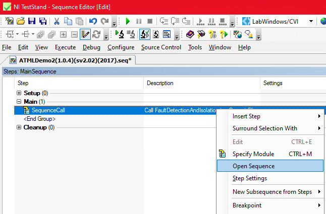
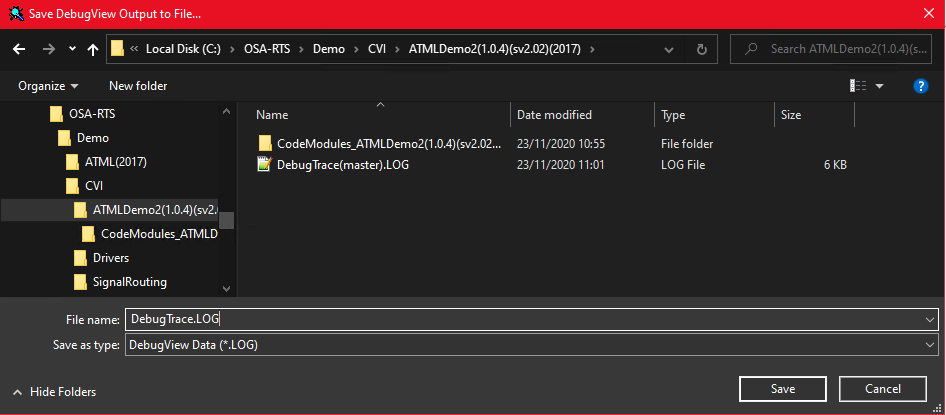
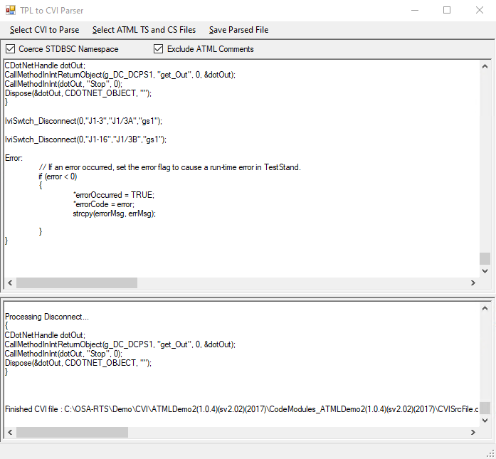
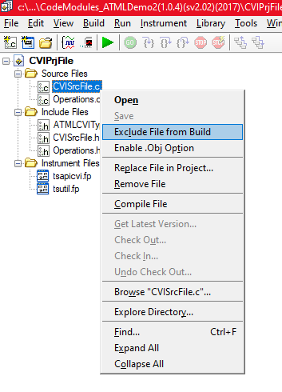
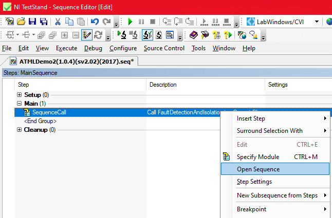
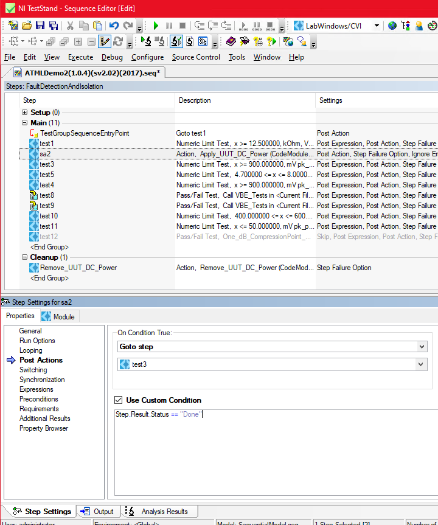
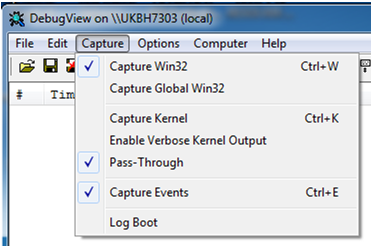
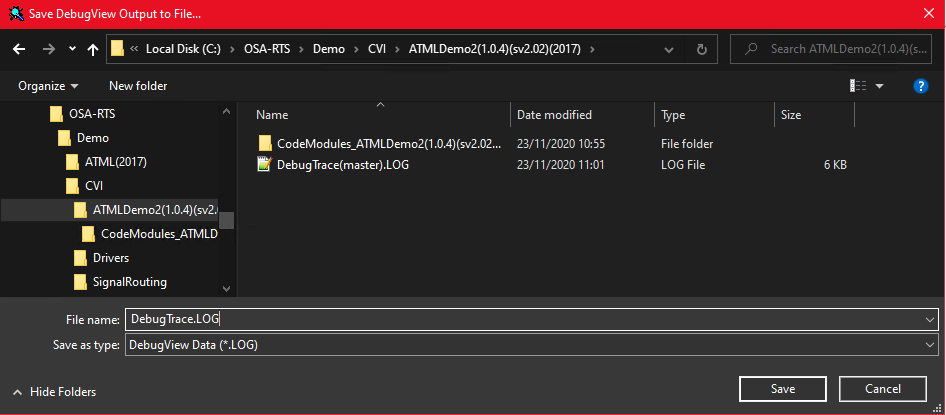

Running LabWindows/CVI OSA-RTS Toolset
ATML Translator Configuration
General settings

Generated Sequence File Settings

Code Module Settings
C:\OSA-RTS\ToolSet\Bin\ATML2TPL_CodeGenerator.dll
Schemas - set location / version
Building the LabWindows/CVI Code Modules
1. Delete the following items from directory “C:\OSA-RTS\Demo\CVI\ATMLDemo2(1.0.4)(sv2.02)(2017)”
a. ‘CodeModules_ATMLDemo2(1.0.4)(sv2.02)(2017)’ folder.
b. “ATMLDemo2(1.0.4)(sv2.02)(2017).seq”
2.From the TestStand Open Menu open the “ATMLDemo2(1.0.4)(sv2.02)(2017).xml” file, which will start the ATML import process
Allocating Driver Capability to the ATML Signals
"1. Run the executable “1641SignalTranslator.exe”, located in ‘C:\OSA-RTS\TOOLSET\BIN’.">1. Run the executable “1641SignalTranslator.exe”, located in ‘C:\OSA-RTS\TOOLSET\BIN’.
1. Run the executable “1641SignalTranslator.exe”, located in ‘C:\OSA-RTS\TOOLSET\BIN’.
3. In the “TS and CS File Selection” window browse to the folder ‘C:\OSA-RTS\Demo\Station\CVI’ and select the files “TestStationDescriptionDemoV6_ManuallyExpandedTSFs.xml” for ‘ATML Test Station Description and “OsaRtsCapabilityDriverDescription.xml” for ‘Spherea Capability Driver Description’. 4. Activate the “’Close’ button in the “TS and CS File Selection” window. 5. Select the check boxes “Coerce STDBSC Namespace” and “Exclude ATML Comments” and open the imported ATML file “CVISrcFile.c “ via the “Select CVI to Parse” menu bar. 6. Allocation is complete when indicated as below with the “Finished CVI file” message 7. Select “Save Parsed File” and in the “Save CVI File As” dialog, enter a unique filename such as “CVISrcFile(Allocated).c”. 8. Close ATML Importer User Interface. 1. Open LabWindows/CVI and load the LabWindows/CVI project file “CVIPrjFile.prj” in the folder “C:\OSA-RTS\Demo\CVI\ATMLDemo2(1.0.4)(sv2.02)(2017)\CodeModules_ATMLDemo2(1.0.4)(sv2.02)(2017)”. 3. Add the file “CVISrcFile(Allocated).c” (saved above) to the Source Files. 4. Add the folder “C:\OSA-RTS\Demo CD\OSA-RTS\Demo\CVI\ATML(TS2019-32)\Drivers\CVIRuntimeSupport” &the following source files to the project: Copy the following dll’s & library into the project folder: 6. Add the library “SignalRouting.lib” in the project folder (copied above) to the project. 7. Copy the include file “SignalRouting.h” in the folder “C:\OSA-RTS\Demo\CVI\SignalRouting” to the project folder. 8. Add the include search path “c:\OSA-RTS\Demo\CVI\Drivers” to the project 9. Build the LabWindows/CVI project to generate the dll “CodeModule.dll”. 10. Exit and close LabWindows/CVI. 11. In TestStand, open/expand the Sequence call in the ‘Main Sequence’ of the ‘ATMLDemo2(1.0.4)(sv2.02)(2017).seq’ 12. With the expanded sequence: a. Select test step ‘test12’. b. Right Mouse click and select Run Mode => Skip. 13. Correct the following import Step Settings for the test step “sa2”: 14. Save the ‘ATMLDemo2(1.0.4)(sv2.02)(2017).seq’ sequence file. 15. Close TestStand. Verification is performed by checking the test program passes and also saving debug viewer log 1. Run “Dbgview.exe” (included as part of Sysinternals) and ensure the following options are set. 2. Open TestStand. 4. Disable ‘Analyze File Before Executing’ and ‘Automatically Save Project File’: 5. Execute the test sequence file Menu:- Execute => Single Pass 6. Save Debug output to 'DebugTrace.log' 6. Using Notepad++ remove all text before ‘++ ResourceManager.Require("Measure') 7. Remove from each line the id time and ident i.e. '00000016 60.72471619 [19364]' so the file looks like this 7. Save the ‘DebugTrace.log’ file and compare against ‘DebugTrace(master).log’.
Completing the Test Program
2. Exclude the file “CVISrcFile.c” from the build.
i. Goto step test3
ii. Step.Result.Status DoneTest Program Running and Verification
Open and Run sequence file ‘ATMLDemo2(1.0.4)(sv2.02)(2017).seq’
Menu:- File=> Open File
Menu:- Debug => Sequence Analyzer => Sequence Analyzer Options… Demonstration Complete


{kind=link}
{kind=link}
{kind=link}
{kind=link}
![3. In the “TS and CS File Selection” window browse to the folder ‘C:\OSA-RTS\Demo\Station\CVI’ and select the files “TestStationDescriptionDemoV6_ManuallyExpandedTSFs.xml” for ‘ATML Test Station Description and “OsaRtsCapabilityDriverDescription.xml” for ‘Spherea Capability Driver Description’. 4. Activate the “’Close’ button in the “TS and CS File Selection” window. 5. Select the check boxes “Coerce STDBSC Namespace” and “Exclude ATML Comments” and open the imported ATML file “CVISrcFile.c “ via the “Select CVI to Parse” menu bar. 6. Allocation is complete when indicated as below with the “Finished CVI file” message  7. Select “Save Parsed File” and in the “Save CVI File As” dialog, enter a unique filename such as “CVISrcFile(Allocated).c”. 8. Close ATML Importer User Interface. Completing the Test Program 1. Open LabWindows/CVI and load the LabWindows/CVI project file “CVIPrjFile.prj” in the folder “C:\OSA-RTS\Demo\CVI\ATMLDemo2(1.0.4)(sv2.02)(2017)\CodeModules_ATMLDemo2(1.0.4)(sv2.02)(2017)”.2. Exclude the file “CVISrcFile.c” from the build. 3. Add the file “CVISrcFile(Allocated).c” (saved above) to the Source Files. 4. Add the folder “C:\OSA-RTS\Demo CD\OSA-RTS\Demo\CVI\ATML(TS2019-32)\Drivers\CVIRuntimeSupport” &the following source files to the project: GenericSupport.c ModuleInfo.c TestStnSpecificSupport.c TSFHandleListSupport.c Utils.c Copy the following dll’s & library into the project folder:  C:\OSA -RTS\Demo\CVI\Drivers\csTestStationDescriptionDemoV6\bin\x86\Release\csTestStnDemoV6Imp.dll C:\OSA-RTS\TOOLSET\BIN\nWXPhysical.dll C:\OSA-RTS\TOOLSET\BIN\STDBSC.dll C:\OSA-RTS\TOOLSET\BIN\Interop.KPNLib.dll C:\OSA-RTS\Demo\Station\CVI\TestStationDescriptionDemoV6.dll C:\OSA-RTS\Demo\CVI\SignalRouting\SignalRouting.dll C:\OSA-RTS\Demo\CVI\SignalRouting\SignalRouting.lib 6. Add the library “SignalRouting.lib” in the project folder (copied above) to the project. 7. Copy the include file “SignalRouting.h” in the folder “C:\OSA-RTS\Demo\CVI\SignalRouting” to the project folder. 8. Add the include search path “c:\OSA-RTS\Demo\CVI\Drivers” to the project 9. Build the LabWindows/CVI project to generate the dll “CodeModule.dll”. 10. Exit and close LabWindows/CVI. 11. In TestStand, open/expand the Sequence call in the ‘Main Sequence’ of the ‘ATMLDemo2(1.0.4)(sv2.02)(2017).seq’  12. With the expanded sequence: a. Select test step ‘test12’. b. Right Mouse click and select Run Mode => Skip.  13. Correct the following import Step Settings for the test step “sa2”:i. Goto step test3ii. Step.Result.Status Done 14. Save the ‘ATMLDemo2(1.0.4)(sv2.02)(2017).seq’ sequence file. 15. Close TestStand. Test Program Running and Verification Verification is performed by checking the test program passes and also saving debug viewer log 1. Run “Dbgview.exe” (included as part of Sysinternals) and ensure the following options are set. 2. Open TestStand.Open and Run sequence file ‘ATMLDemo2(1.0.4)(sv2.02)(2017).seq’Menu:- File=> Open File 4. Disable ‘Analyze File Before Executing’ and ‘Automatically Save Project File’:Menu:- Debug => Sequence Analyzer => Sequence Analyzer Options… 5. Execute the test sequence file Menu:- Execute => Single Pass 6. Save Debug output to 'DebugTrace.log' 6. Using Notepad++ remove all text before ‘++ ResourceManager.Require("Measure') 7. Remove from each line the id time and ident i.e. '00000016 60.72471619 [19364]' so the file looks like this 7. Save the ‘DebugTrace.log’ file and compare against ‘DebugTrace(master).log’. Demonstration Complete](style/images/photo_demo/Capt7.PNG){kind=link}
{kind=link}
{kind=link}
{kind=link}
{kind=link}
{kind=link}
{kind=link}
{kind=link}
{kind=link}
{kind=link}
{kind=link}
{kind=link}
{kind=link}
{kind=link}
{kind=link}
{kind=link}